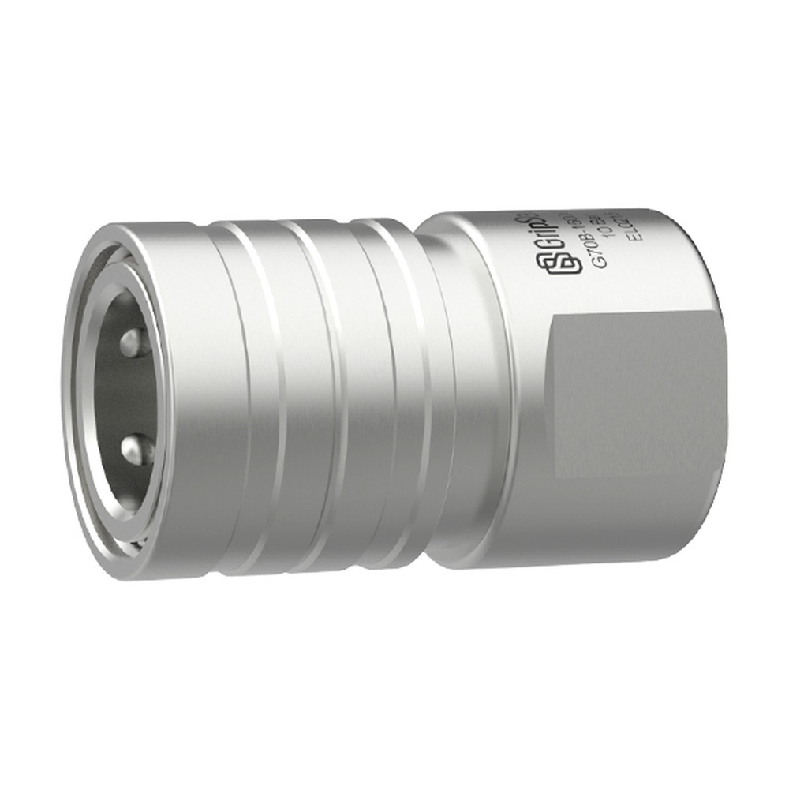
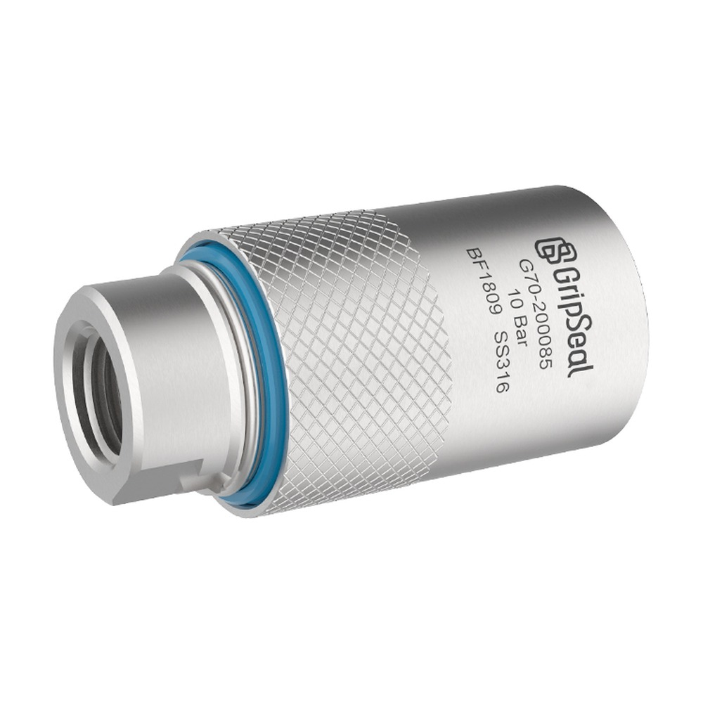
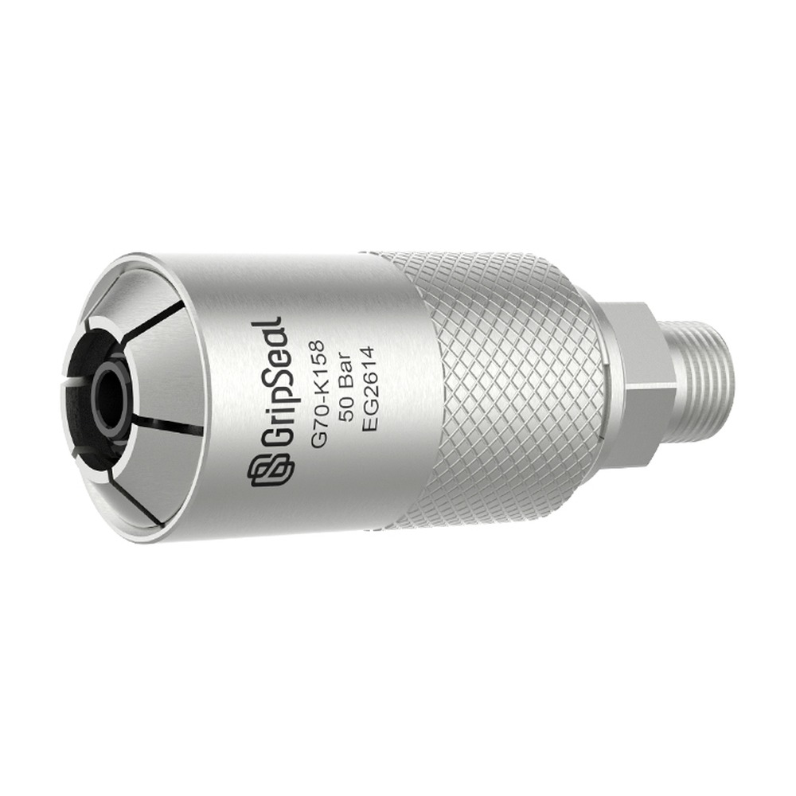

型号概览
外卡式抱箍，端面密封
G70 通过滑动套驱动分瓣卡爪，从外部抱紧管端凸缘外圆，配合端面密封形成气密连接，直通流道减少压损。
快速信息
获取 G70 选型支持典型使用方向
当工件为管端凸缘或异形管，且不宜从管内径封堵时，可评估该外卡式方案。
外卡式抱箍密封，卡爪从外部抱紧管端凸缘外圆并形成端面密封；不依赖管内径，适合冷却水管、燃油管等异形管的检漏、运转与老化测试。


G70 通过滑动套驱动分瓣卡爪，从外部抱紧管端凸缘外圆，配合端面密封形成气密连接，直通流道减少压损。
当工件为管端凸缘或异形管，且不宜从管内径封堵时，可评估该外卡式方案。
| 最高工作压力 | 真空 – 70 Bar（目录规格表上限）；标准品默认 10 Bar，10–50 Bar 高压测试需联系确认 |
|---|---|
| 密封方式 | 外卡式抱箍：滑动套驱动分瓣卡爪，从外部抱紧管端凸缘外圆，锥面端面密封 |
| 最大凸缘宽度 | 4–9 mm（Max. Bead Width） |
| 密封范围（管端外径） | 按目录选型表分段，约 4–48 mm（G70SP 自 4 mm 起，G70P 至 48 mm；各系列不同） |
| 介质接口 | BSPP 1/8 – 1（G70P 大口径本体至 BSPP 1-3/4）、M8（G70SP 小口径），按型号 |
| 主体材质 | 316 不锈钢（SUS316）；G70P Body 10–12 大口径本体为铝合金 |
| 密封材质 | 主密封 Neoprene / NBR（G70P 可选 Silicone）；内密封 NBR / EPDM |
| 操作方式 | 滑动套推拉（手动），直通设计，带防脱指示环（Anti-sliding / Indicator Ring） |
| 工作温度 | -20 °C – +120 °C |

卡爪从外部抱紧管端凸缘外圆，端面形成气密连接，不依赖管内径，适合异形管与凸缘管。
滑动套驱动卡爪开合，直通流道减少压损与流量损失，满足高流量检漏与功能测试。
到位确认环提供可视/触觉反馈，确保夹紧到位后再充压，提升操作安全性。
G70P / G70SP / G70RP / G70NP 采用聚合物夹套（Polymer Jacket）外卡锁紧，避免刮伤铝合金、工程塑料等工件表面，真空至 10 Bar。
| 系列 | 结构特征 | 密封范围 Ø | 介质接口 | 最大压力 | 本体材质 |
|---|---|---|---|---|---|
| G70 标准（异形管） | 外卡式分瓣卡爪抱箍凸缘，锥面端面密封 | 8–38 mm（Body 2–8） | BSPP1/8 – BSPP3/4 | 10 Bar（上限真空 – 70 Bar） | 316 不锈钢 |
| G70S 小本体 | Short / Small-Body 紧凑本体 | 8–38 mm | BSPP1/8 – BSPP1 | 10 Bar | 316 不锈钢 |
| G70N / G70N-TL | Mini 本体；TL 为旋转套 L 型 | 8–20 mm | BSPP1/4（TL 含 1/8、1/2） | 10 Bar | 316 不锈钢 |
| G70R 旋转套 | 短本体旋转套；另有 J2044 燃油管版本 | 15.8–20 mm | BSPP3/8（燃油管 1/4 – 1/2） | 10–20 Bar；燃油管 50 Bar | 316 不锈钢 |
| G70P 无损 | 聚合物夹套锁紧，不刮伤工件表面 | 8–48 mm（Body 2–9）；50–75 mm（Body 10–12） | BSPP1/4 – 1；大口径 1-1/4 – 1-3/4 | 10 Bar（Body 9 / 铝本体 5 Bar） | 316 不锈钢 / 铝合金 |
| G70SP 小本体无损 | Small-Body Damage-Free；另有宝塔口 BT 版本 | 4–42 mm | M8、BSPP1/8 – 1 | 10 Bar | 316 不锈钢 |
| G70RP / G70NP | 旋转套 / Mini 无损变体 | 8–23 mm | BSPP1/4、BSPP3/8 | 10 Bar | 316 不锈钢 / 聚合物夹套 |
| G70K 制冷扩口管 | 制冷行业扩口管检漏与运转测试 | 9.52–35.3 mm | BSPP3/8 – 1/2 | 50 Bar | 316 不锈钢 / NBR |
目录中的实际应用覆盖异形管与冷却/燃油管路的检漏、运转与老化测试，以及新能源汽车与制冷行业。
电池冷板与冷却回路的密封连接，G70P 无损系列适配易划伤表面。
电机冷却系统、发动机冷却水道的检漏与运转测试。
发动机总成测试，以及冷热水管、电驱进水口、压缩机进出口等凹槽管口。
G70K 用于制冷扩口管（50 Bar），燃油管版本符合 J2044。
在确定最终型号前，可先对比相邻的管件密封系列。